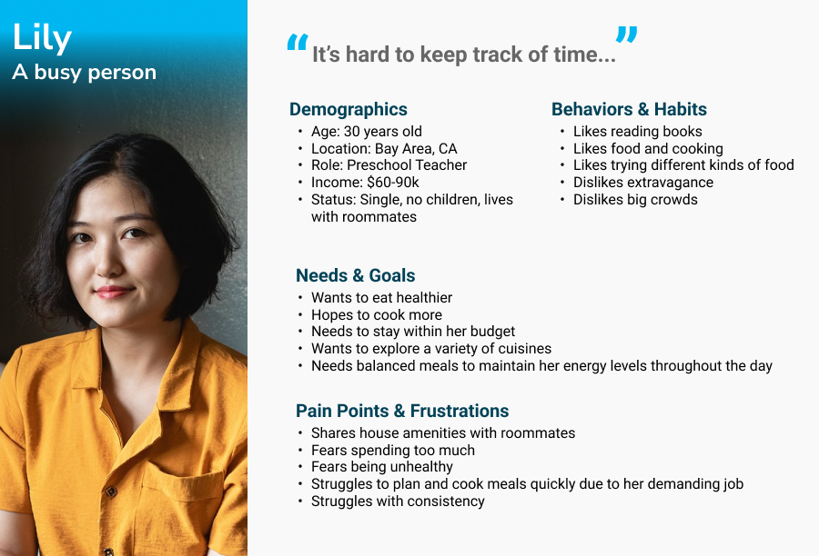
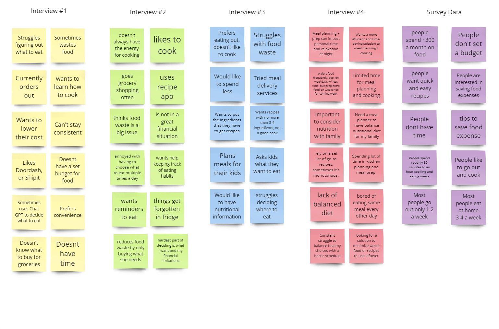
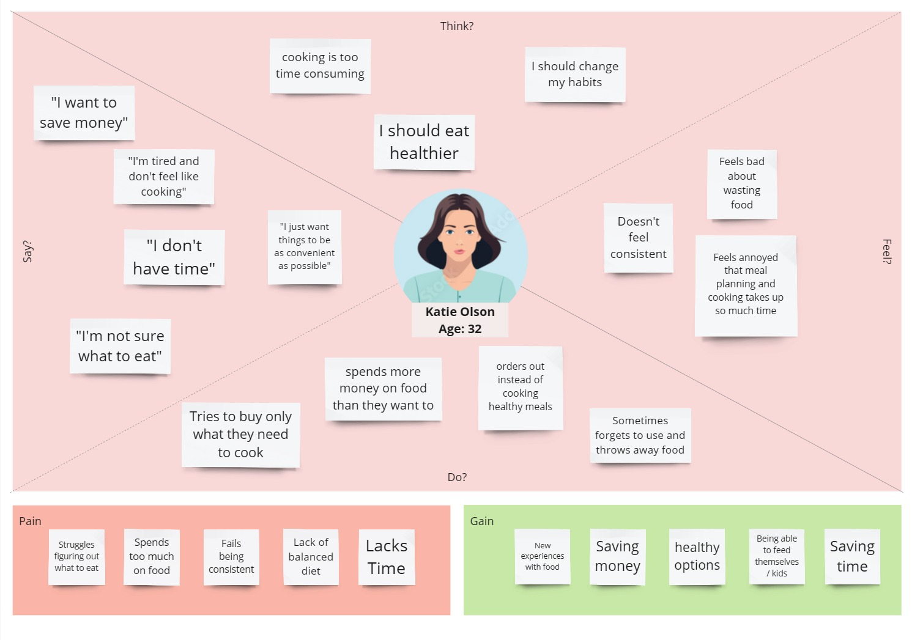
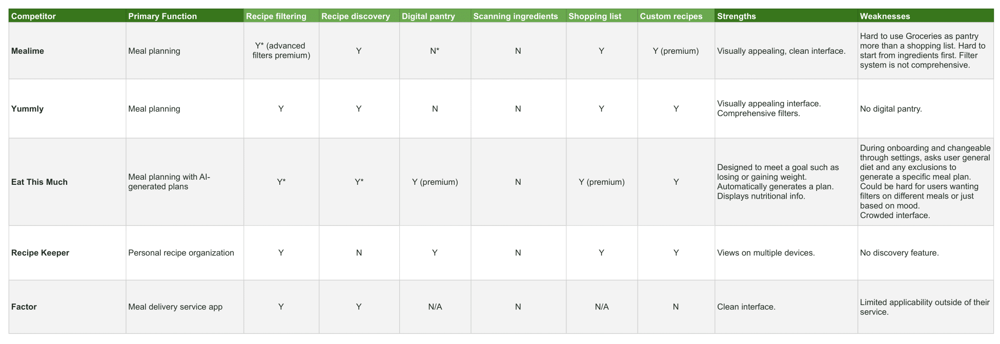
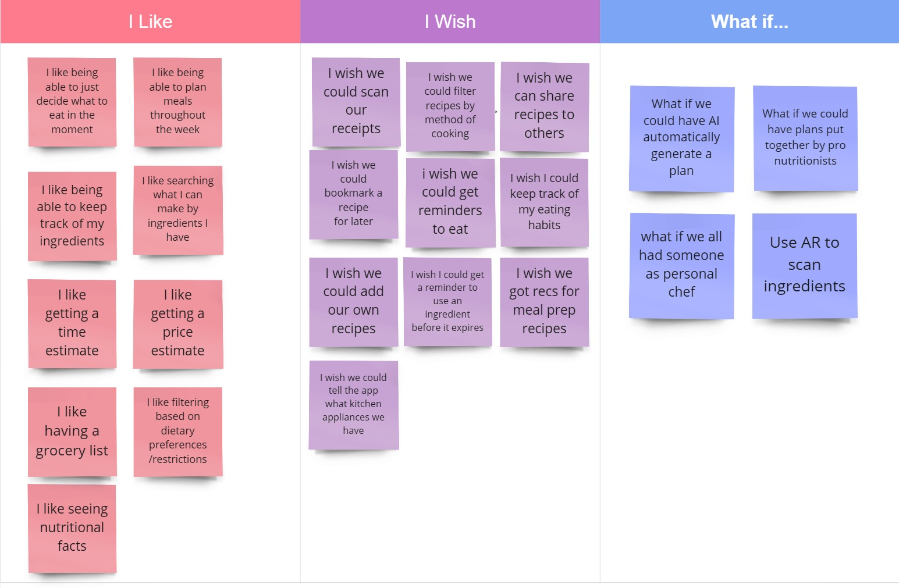
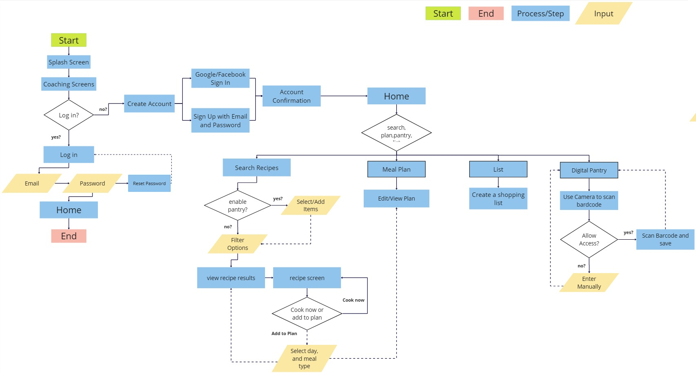
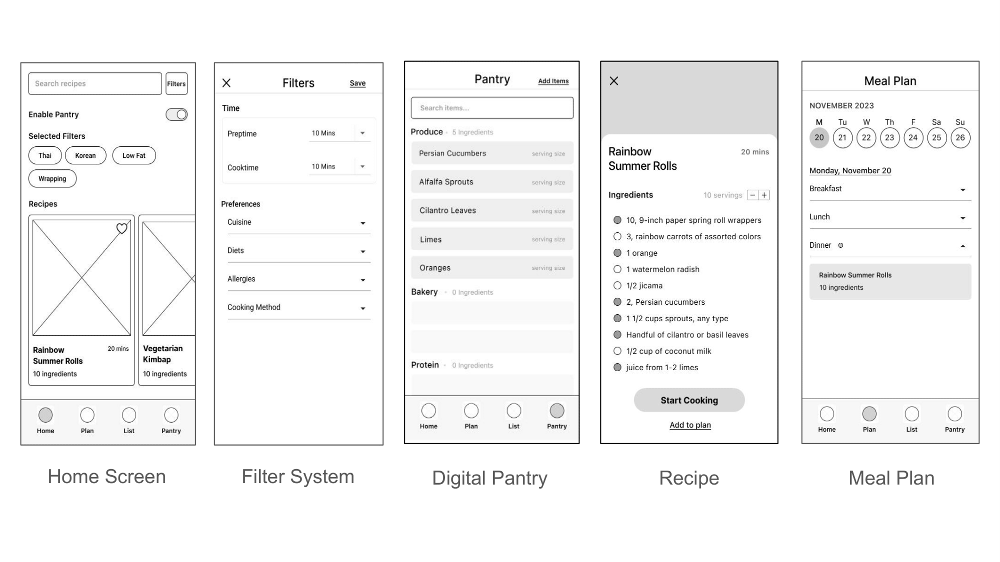
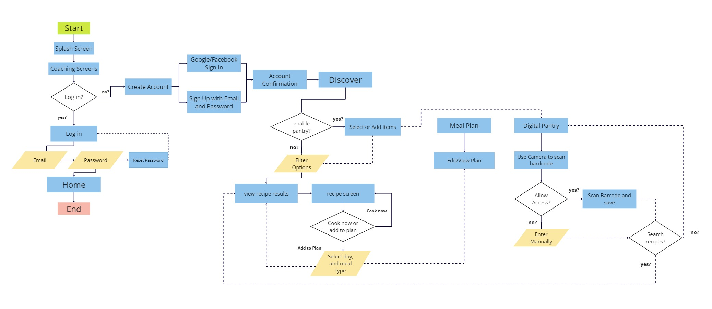
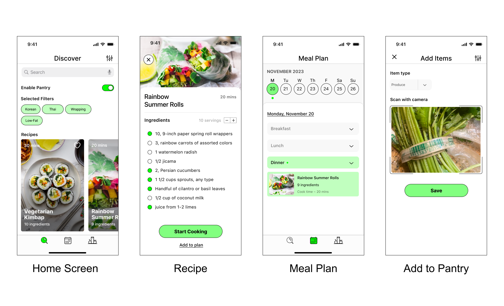

For my first group project in UI/UX, our job was to research, prototype, test, and validate an idea for a brand-new mobile application. Our apps must solve a real, clearly identified need in users’ everyday lives. Out of many ideas our group generated for a mobile app, we all identified with the need to decide what to eat everyday.
Busy people face the everyday issue of deciding what to eat. Due to time constraints and the difficulty of keeping track of ingredients, they eat out too much instead of cooking.
Design a mobile app that addresses these issues through making cooking as easy as possible. Users would be empowered by our mobile app being able to:
Before we started user research proper, we first designed a proto-persona describing our target user.
Since we first identified the struggles amongst ourselves, we designed a proto-persona not unlike ourselves: a more introverted person that cooks for themselves, but doesn't have much time and money which makes them struggle to cook more often.

We conducted a user survey with 29 respondents. We first asked questions that compared eating out and cooking (budget, time, etc), since the initial idea of "helping people decide what to eat" could encompass a variety of different kinds of possible applications.
We found that the majority of users struggled with time constraints when deciding what to eat. Being able to find quick and easy recipes was also the most requested feature that would motivate users to cook more often.
These two insights inspired us to focus on making cooking as easy as possible.
We conducted five one-on-one user interviews. Like the survey, we wanted an idea of their habits, budget, and time spent regarding what they eat on a day-to-day basis. We wanted to identify the considerations made and possible pain points in how people plan their meals.
We gathered all the insights we gained from our survey and interviews and arranged them into an affinity diagram, showing the common trends between them.
Our main takeaways:
“Okay, I'm hungry. What am I going to eat this morning? And, once you figure that out, you're like, okay, great, I figured it out. And then a few hours later, you're hungry again.”
“It's a constant struggle to balance healthy choices with a hectic schedule. I'm open to any solutions that can make this aspect of life easier and more enjoyable.”
We then created an empathy map that synthesized what we learned from our user research. It summarizes what our users say, think, feel, and do, their pains (obstacles, frustrations) and gains (motivations, potential successes).
With an idea of what users need, we started to explore the possible features our app needed to address them.
Our direct competitors were similar meal planning mobile apps: Mealime, Yummly and Eat This Much. Our indirect competitors included Recipe Keeper and Factor. Recipe Keeper is a personal recipe organization tool, and Factor is a meal delivery service app.
We appreciated Yummly and Mealime's visually appealing interfaces.
However, we noticed Mealime lacked a proper filter system to suit the users' preferences for recipes, only allowing for one filter selected at a time. It is also much harder to use Mealime's Grocery screen as a Pantry list than a shopping list.
The general flow of Mealime is to select the dishes first, then buy the ingredients, while people looking for a recipe working from ingredients they need to use will have a much harder time searching.
While we took inspiration from Yummly for the specific filter categories users would need when searching for recipes, we also noticed that Yummly did not have a place where ingredients on hand could be stored and remembered (i.e. a "Digital Pantry," "Groceries" screen) like Mealime does.
We desired this feature to meet the users' needs of reducing food waste, and not knowing what to buy based on what they had on hand.
We recognized the need for a comprehensive solution to our users' needs that involved synthesizing the strengths of these apps.
We began to vote on, define, and organize ideas for features based on their feasibility and originality.
We prioritized the features that were both feasible and necessary to fulfill the users needs, while also making note of more original ideas that would be nice to have.
We created a story of our user persona, Katie, who faces the problem of feeling hungry and needing to feed herself and her children dinner.
As a busy mom, she does not have a lot of time on her hands, and she is struggling to come up with something quick and easy to cook.
She thinks that it might be easier to just order food, but she thinks that ordering food might be too expensive, and the cheaper options tend to be unhealthy.
Checking her fridge for ideas, she remembers she has a lot of groceries she needs to user before they go bad, but she doesn't know what she could make from them.
But then she finds our cooking app! She enters in the ingredients she needs to use and the app finds a recipe that uses them. She can also filter the recipes
by the time needed, the cooking methods required, and any preferences and restrictions her and her children have.
Thanks to our app, she finds a great recipe that is quick, easy, to her and her childrens' liking, and all cheaper, healthier, and less wasteful than eating out.
With our plans for features, we then began to visualize our mobile app and create prototypes to test and iterate upon.
Our first drawing of our user flow takes users from the signup process through all the main features: Sign up, searching recipes, adding ingredients to pantry, creating a shopping list, and planning out meals.
Based off this user flow, I sketched out wireframes for screens needed for the main features.
For the filters screen, I anticipated that the most important criteria would be preptime and cooktime, since our users indicated time as a constraint. These were placed at the top.
For the meal plan screen, I used the existing pattern of a weekly calendar view i.e. the default iPhone Calendar app, something that users would be familiar with, in order to decrease their cognitive load.
We made slight changes from our digital wireframes to lo-fi prototypes based on notes of our competitors' interfaces and user feedback, such as making sure each element had an appropriate size to be a viable touch target on mobile screens.
We then took our lo-fi prototype to conduct usability tests. The tasks we wanted to test were:
We would fix most of the small visual issues in the transition to Mid-Fi, however, there were a few issues that were of relatively high priority:
Based on the results, we made the following iterations to the prototype:
Easy to understand graphics, appearing before the user signs up, prime the users on the app's features.
Additionally, changing our "Home" page to "Discover" with a magnifying glass icon signifying searching for recipes, made it readable as the page where users can find recipes.
Pop-up overlays appear when the user attempts to enable the pantry, guiding them to the Pantry screen. Once they've added their ingredients, they are guided back to the Discover screen to see what recipes they can make with the ingredients they have in their pantry.
We initially bolded the ingredients within the text of the recipe. We now placed them at the bottom section of each step in the recipe to further improve readability.
We also updated the user flow to reflect the iteration we made with our overlays guiding the user.
We did not finish a high fidelity prototype within the working period. However, I created some screens of what a hi-fidelity prototype would look like with color images and the implementation of the green accent color from our logo.
Additionally, here are the explorations I created for the branding and logo design of Cuesine.
This was our first group project, so we practiced team communication and division of tasks. We also learned a lot about working from a broad idea to paring down to a few key features based on our user research, as well as controlling our scope and being realistic about what we could accomplish within a limited timeframe given many features that would be nice to have.
Our next steps would be to fully build out the hi-fidelity prototype, as well as to test and iterate upon it. In the future, we would like to build out the bookmarking feature (hinted at with the heart icon on each recipe card) and add more features such as a shopping list, custom recipes, and community features.
{kind=link}
{kind=link}
{kind=link}
{kind=link}
{kind=link}
{kind=link}
{kind=link}
{kind=link}
{kind=link}